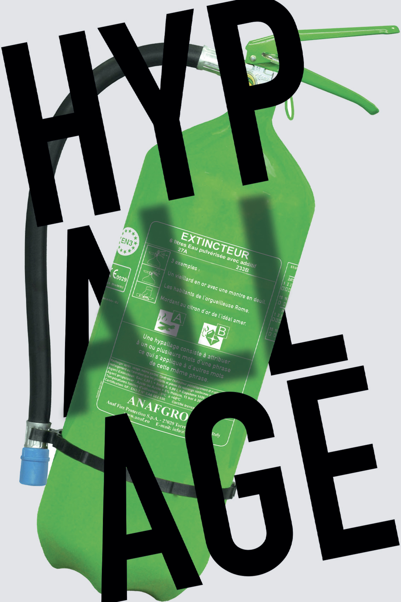
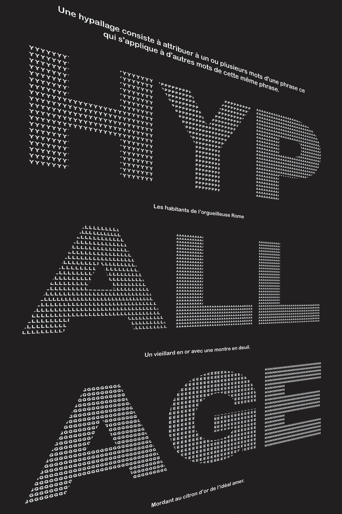
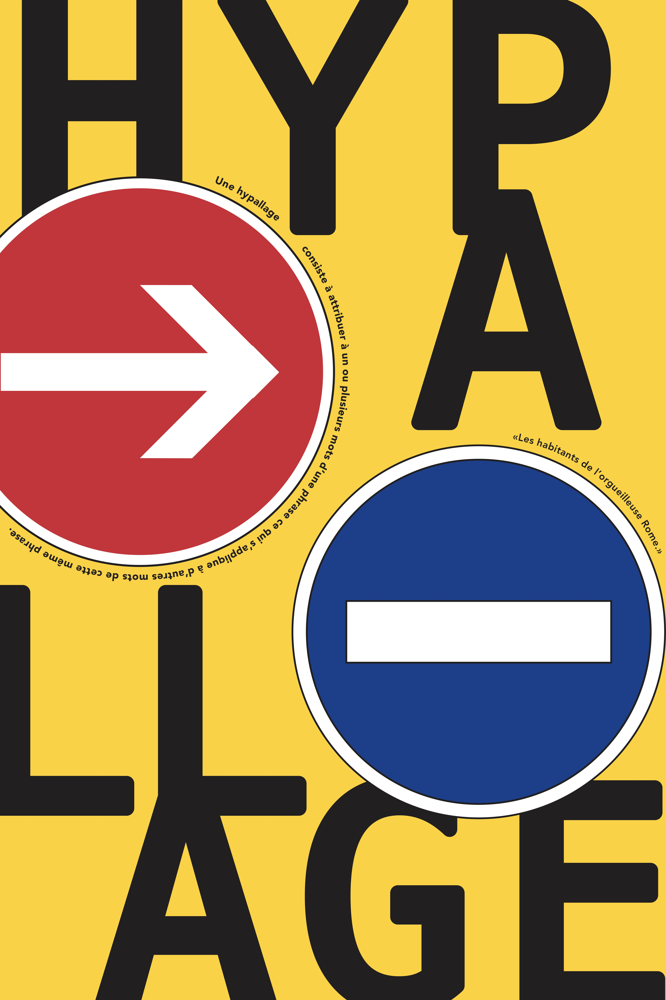

AFFICHES TYPOGRAPHIQUES "HYPALLAGE"
Proposition de trois affiches mettant en avant la typographie à partir de la figure de style « hypallage ». Il s'agissait de jouer avec la définition de cette figure de style plutôt que de fournir des exemples précis pour les compositions. L'hypallage est une figure de style et de rhétorique qui consiste en la construction d'expressions où deux termes sont liés syntaxiquement, alors qu'on s'attendrait à voir l'un des deux rattaché à un troisième. J'ai donc joué avec les couleurs attribuées à des objets, qui ne se retrouvent jamais dans d'autres couleurs, ainsi qu'avec l'effet visuel des lettres formant le mot avec d'autres lettres, comme le 'h' fait avec plein de 'y'. La première affiche explore une inversion de couleur sur un extincteur, la deuxième se concentre sur le mot créé avec différentes lettres, et la dernière présente, à nouveau, une inversion de couleur sur des panneaux de signalisation. J'ai privilégié la définition de la figure de style plutôt que des exemples concrets.